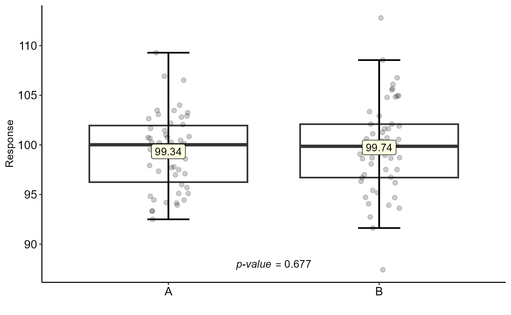

test_two.RdTest for two samples (paired and unpaired t test, paired and unpaired Wilcoxon test)
test_two( trat, resp, paired = FALSE, test = "t", alternative = c("two.sided", "less", "greater"), conf.level = 0.95, theme = theme_classic(), ylab = "Response", xlab = "", var.equal = FALSE )
| trat | Categorical vector with the two treatments |
|---|---|
| resp | Numeric vector with the response |
| paired | A logical indicating whether you want a paired t-test. |
| test | Test used (t for test t or w for Wilcoxon test) |
| alternative | A character string specifying the alternative hypothesis, must be one of "two.sided" (default), "greater" or "less". You can specify just the initial letter. |
| conf.level | Confidence level of the interval. |
| theme | ggplot2 theme (default is theme_classic()) |
| ylab | Variable response name (Accepts the expression() function) |
| xlab | Treatments name (Accepts the expression() function) |
| var.equal | A logical variable indicating whether to treat the two variances as being equal. If TRUE then the pooled variance is used to estimate the variance otherwise the Welch (or Satterthwaite) approximation to the degrees of freedom is used. |
Returns the test for two samples (paired or unpaired t test, paired or unpaired Wilcoxon test)
Alternative = "greater" is the alternative that x has a larger mean than y. For the one-sample case: that the mean is positive.
If paired is TRUE then both x and y must be specified and they must be the same length. Missing values are silently removed (in pairs if paired is TRUE). If var.equal is TRUE then the pooled estimate of the variance is used. By default, if var.equal is FALSE then the variance is estimated separately for both groups and the Welch modification to the degrees of freedom is used.
If the input data are effectively constant (compared to the larger of the two means) an error is generated.
Gabriel Danilo Shimizu, shimizu@uel.br
Leandro Simoes Azeredo Goncalves
Rodrigo Yudi Palhaci Marubayashi
#> #> Welch Two Sample t-test #> #> data: resp by trat #> t = -0.6702, df = 93.526, p-value = 0.5044 #> alternative hypothesis: true difference in means between group A and group B is not equal to 0 #> 95 percent confidence interval: #> -2.578613 1.277202 #> sample estimates: #> mean in group A mean in group B #> 99.73776 100.38847 #>test_two(trat,resp,paired = TRUE)#> #> Paired t-test #> #> data: resp by trat #> t = -0.64148, df = 49, p-value = 0.5242 #> alternative hypothesis: true difference in means is not equal to 0 #> 95 percent confidence interval: #> -2.689198 1.387786 #> sample estimates: #> mean of the differences #> -0.6507056 #>